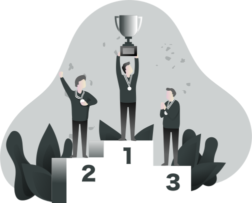
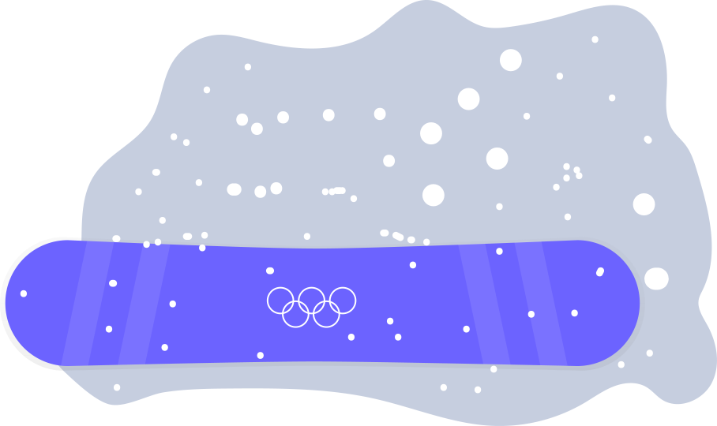

1. HISTORIA
El nombre voleibol en español (y sus variantes vóleibol, volibol, balonvolea o vóley), deriva del inglés
“volleyball” y hace referencia a una disciplina de más de cien años de existencia que fue creada en 1895
por William G. Morgan, director de educación física en la asociación Young Men’s Christian Association
(YMCA) de Estados Unidos.
Originalmente se llamaba “mintonette” pero, durante una demostración, notaron que el voleo del balón
sobre la red describía la esencia del juego y por eso lo comenzaron a llamar “volley ball”. En 1952, la
Asociación Norteamericana de Voleibol unificó las palabras para denominarlo de manera oficial
“volleyball”.
El voleibol es un deporte que se juega en una cancha dividida a la mitad por una red, donde se enfrentan
dos equipos de seis jugadores cada uno. El objetivo del juego consiste en pasar el balón por encima de
la red para que toque el suelo del campo contrario, sin que el contrincante logre alcanzarlo.
Se juega golpeando o impulsando el balón y cada equipo tiene un máximo de tres toques para pasarlo al
campo contrario. Los jugadores de un mismo equipo rotan su posición a medida que van ganando puntos.
Reglas del juego
La puntuación. Se disputa el mejor puntaje de cinco tandas de juego, también denominados “sets”. El
equipo que acumula tres sets ganados será el campeón, para lo cual debe alcanzar en cada set
veinticinco puntos y con una ventaja de dos puntos respecto al adversario (por ejemplo, veinticinco
contra veintitrés puntos). En caso de que los equipos alcancen una puntuación de veinticinco contra
veinticuatro, deben jugar hasta lograr una diferencia de dos puntos. Por eso, la duración de los
partidos de voleibol varía tanto.
El saque. Es la acción que da comienzo a cada partida, se realiza con el jugador ubicado detrás de
la línea de fondo y el resto del equipo situado en los límites del campo. Si un jugador saca y el
adversario no logra atajar el balón, el jugador anota un punto a favor de su equipo. En caso de que
el saque resulte fallido (toca la red y cae en su propio campo o se va fuera del área), el turno de
saque pasa al adversario.
Área de juego. Está delimitada por un rectángulo de dieciocho metros de largo, por nueve metros de
ancho, y se divide en el centro por una red que separa las dos áreas de juego. La designación de los
campos para cada equipo se sortea antes del partido y en cada nuevo set se intercambian las áreas.
Zona de ataque. La línea central que se ubica debajo de la red divide al campo de juego en dos zonas
iguales, de nueve metros por nueve metros cada una. A tres metros de distancia de la línea central,
otra línea delimita la zona de ataque para cada área, donde se encuentran limitadas las acciones de
los jugadores.
La red. Se ubica en el centro del campo de juego a una altura de 2,43 cm para la categoría masculina
y a 2,24 cm para la categoría femenina. Si el balón toca la red, no se considera una falta y, al
rebotar, puede continuar con la jugada.

2.Hobbie
Disfruto mucho jugar voley, es como una forma de distraerme, divertirme. No todo en
la vida se trata de estudiar, de obtener el mejor empleo, de hacer todo como la
sociedad diga; la vida se trata de disfrutarla, el tíempo que se disfruta es el
verdadero tiempo vívído y eso es lo que hago, distraerme en lo que me gusta, en lo
que me hace reir, en donde puedo ser yo 100%
donde mi corazon y mi alma se enfocan y se concentran y a la misma ves se emocionan.
El voley me ha enseñado que si me caigo siete veces pues me levanto ocho veces, me
ha enseñado a no abandonar, porque muchas veces uno se frustra porque no gano una
partido pero eso no significa que perder sea malo y que por eso debo abandonar.
3.anécdota
Cuando empece a jugar voley, yo no sabia nisiquiera recibir el balon, el entrenador
de la epoca me enseño demasiado, desde recibir el balon, hasta atacar, defender,
sacar y todo eso no fue facil, el entrenador me llevaba a torneos donde las chicas
eran muy buenas, donde cada una de ellas llevaba por lo menos 13 años de su vida
entrenando y los saques, la entrada a la malla, todo era pecfecto y yo ahi, apenas
aprendiendo pero asi fue mi proceso, y asi fue como aprendi y le agrezco y le
agradecere siempre, porque si no hubiese sido asi la verdad no se que tan bien
hubiese aprendido o que tanto me habria enamorado del voley .
FRASES

Cuando pienses en dejarlo, recuerda porqué empezaste.

Sé fuerte nunca sabes a quien estás inspirando.